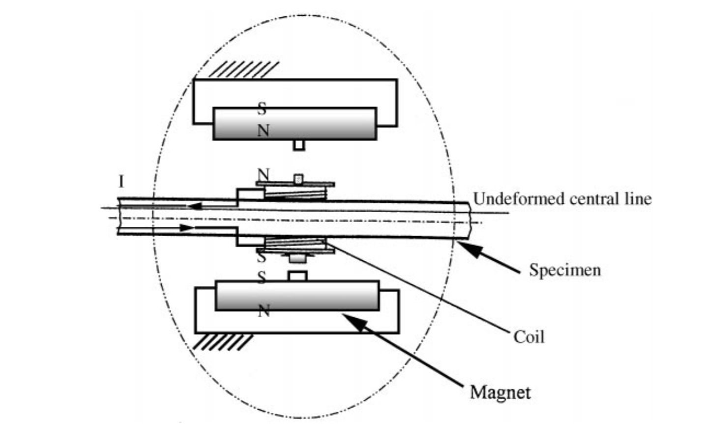
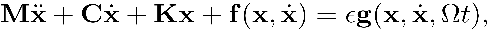
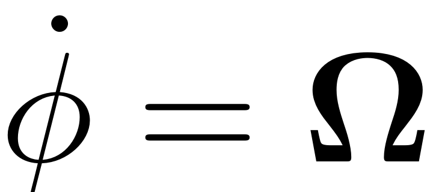
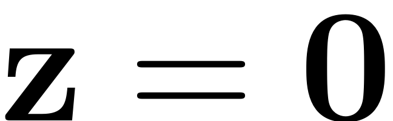
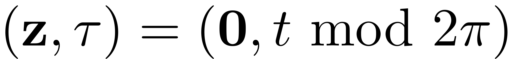
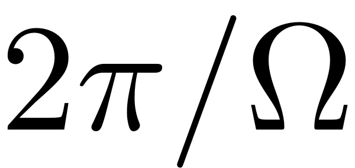
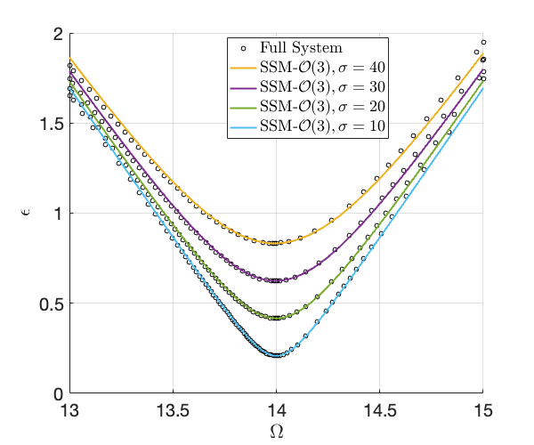

<!DOCTYPE html
  PUBLIC "-//W3C//DTD HTML 4.01 Transitional//EN">

<html><html><body><div class="banner"><a href="../../../../index.html"></a></div></body></html><head>
<meta content="text/html; charset=utf-8" http-equiv="Content-Type"/>
<!--
This HTML was auto-generated from MATLAB code.
To make changes, update the MATLAB code and republish this document.
      --><title>BernoulliBeam_SD</title><meta content="MATLAB 9.14" name="generator"/><link href="http://purl.org/dc/elements/1.1/" rel="schema.DC"/><meta content="2023-09-01" name="DC.date"/><meta content="BernoulliBeam_SD.m" name="DC.source"/><style type="text/css">
html,body,div,span,applet,object,iframe,h1,h2,h3,h4,h5,h6,p,blockquote,pre,a,abbr,acronym,address,big,cite,code,del,dfn,em,font,img,ins,kbd,q,s,samp,small,strike,strong,tt,var,b,u,i,center,dl,dt,dd,ol,ul,li,fieldset,form,label,legend,table,caption,tbody,tfoot,thead,tr,th,td{margin:0;padding:0;border:0;outline:0;font-size:100%;vertical-align:baseline;background:transparent}body{line-height:1}ol,ul{list-style:none}blockquote,q{quotes:none}blockquote:before,blockquote:after,q:before,q:after{content:'';content:none}:focus{outine:0}ins{text-decoration:none}del{text-decoration:line-through}table{border-collapse:collapse;border-spacing:0}

html { min-height:100%; margin-bottom:1px; }
html body { height:100%; margin:0px; font-family:Arial, Helvetica, sans-serif; font-size:10px; color:#000; line-height:140%; background:#fff none; overflow-y:scroll; }
html body td { vertical-align:top; text-align:left; }

h1 { padding:0px; margin:0px 0px 25px; font-family:Arial, Helvetica, sans-serif; font-size:1.5em; color:#d55000; line-height:100%; font-weight:normal; }
h2 { padding:0px; margin:0px 0px 8px; font-family:Arial, Helvetica, sans-serif; font-size:1.2em; color:#000; font-weight:bold; line-height:140%; border-bottom:1px solid #d6d4d4; display:block; }
h3 { padding:0px; margin:0px 0px 5px; font-family:Arial, Helvetica, sans-serif; font-size:1.1em; color:#000; font-weight:bold; line-height:140%; }

a { color:#005fce; text-decoration:none; }
a:hover { color:#005fce; text-decoration:underline; }
a:visited { color:#004aa0; text-decoration:none; }

p { padding:0px; margin:0px 0px 20px; }
img { padding:0px; margin:0px 0px 20px; border:none; }
p img, pre img, tt img, li img, h1 img, h2 img { margin-bottom:0px; }

ul { padding:0px; margin:0px 0px 20px 23px; list-style:square; }
ul li { padding:0px; margin:0px 0px 7px 0px; }
ul li ul { padding:5px 0px 0px; margin:0px 0px 7px 23px; }
ul li ol li { list-style:decimal; }
ol { padding:0px; margin:0px 0px 20px 0px; list-style:decimal; }
ol li { padding:0px; margin:0px 0px 7px 23px; list-style-type:decimal; }
ol li ol { padding:5px 0px 0px; margin:0px 0px 7px 0px; }
ol li ol li { list-style-type:lower-alpha; }
ol li ul { padding-top:7px; }
ol li ul li { list-style:square; }

.content { font-size:1.2em; line-height:140%; padding: 20px; }

pre, code { font-size:12px; }
tt { font-size: 1.2em; }
pre { margin:0px 0px 20px; }
pre.codeinput { padding:10px; border:1px solid #d3d3d3; background:#f7f7f7; }
pre.codeoutput { padding:10px 11px; margin:0px 0px 20px; color:#4c4c4c; }
pre.error { color:red; }

@media print { pre.codeinput, pre.codeoutput { word-wrap:break-word; width:100%; } }

span.keyword { color:#0000FF }
span.comment { color:#228B22 }
span.string { color:#A020F0 }
span.untermstring { color:#B20000 }
span.syscmd { color:#B28C00 }
span.typesection { color:#A0522D }

.footer { width:auto; padding:10px 0px; margin:25px 0px 0px; border-top:1px dotted #878787; font-size:0.8em; line-height:140%; font-style:italic; color:#878787; text-align:left; float:none; }
.footer p { margin:0px; }
.footer a { color:#878787; }
.footer a:hover { color:#878787; text-decoration:underline; }
.footer a:visited { color:#878787; }

table th { padding:7px 5px; text-align:left; vertical-align:middle; border: 1px solid #d6d4d4; font-weight:bold; }
table td { padding:7px 5px; text-align:left; vertical-align:top; border:1px solid #d6d4d4; }


  </style></head><body><div class="content"><h1>Parametric resonance of a bernoulli beam</h1><h2>Contents</h2><div><ul><li><a href="#1">Euler Bernoulli beam with cubic spring and damper</a></li><li><a href="#2">Generate model</a></li><li><a href="#5">Dynamical system setup</a></li><li><a href="#6">Linear Modal Analysis</a></li><li><a href="#7">Stability Diagram from Reduced Dynamics</a></li><li><a href="#8">Verification: Collocation using <a href="https://sourceforge.net/p/cocotools/wiki/Home/">coco</a></a></li></ul></div><h2 id="1">Euler Bernoulli beam with cubic spring and damper</h2><p>Instead of external excitation on the last node, the excitation here is of parametric type. The tip of the beam is subject to linear parametric excitation. The experiment this example is based on can be found in</p>
<p>Chen, C. C. &amp; Yeh, M. K.:  <i>Parametric instability of a beam under electromagnetic excitation</i>. Journal of Sound and Vibration 240,747–764, <a href="https://doi.org/10.1006/jsvi.2000.3255">https://doi.org/10.1006/jsvi.2000.3255</a>;
A schematic depiction of the model is given by </p>

<pre class="codeinput">clear <span class="string">all</span>
</pre><h2 id="2">Generate model</h2><pre class="codeinput">nElements = 5;
kappa = 50; <span class="comment">% cubic spring</span>
gamma = 0.01; <span class="comment">% cubic damping</span>
sigmas = [10,20,30,40]; <span class="comment">% Damping coefficients</span>
</pre><pre class="codeinput">ii = 1;
<span class="keyword">for</span> sigma = sigmas
</pre><pre class="codeinput">    [M,C,K,fnl,fext] = build_model_parametric(kappa, gamma, nElements);
    C = sigma * C;
    n = length(M);
</pre><h2 id="5">Dynamical system setup</h2><p>We consider the parametrically excited system</p><p></p><p>which can be written in the first-order form as</p><p></p><p></p><p>where</p><p></p><pre class="codeinput">DS = <a href="../../../../Library/DynamicalSystem/DynamicalSystem.html">DynamicalSystem</a>();
set(DS,<span class="string">'M'</span>,M,<span class="string">'C'</span>,C,<span class="string">'K'</span>,K,<span class="string">'fnl'</span>,fnl);
set(DS.<a href="../../../../Library/Features/Options/Options.html">Options</a>,<span class="string">'Emax'</span>,5,<span class="string">'Nmax'</span>,10,<span class="string">'notation'</span>,<span class="string">'multiindex'</span>)
epsilon = 0.002;
DS.<a href="../../../../Library/DynamicalSystem/add_forcing.html">add_forcing</a>(fext,epsilon);
</pre><h2 id="6">Linear Modal Analysis</h2><pre class="codeinput"><span class="comment">% Analyse spectrum</span>
[V,D,W_evec] = DS.<a href="../../../../Library/DynamicalSystem/linear_spectral_analysis.html">linear_spectral_analysis</a>();

<span class="comment">% Choose Master subspace (perform resonance analysis)</span>

<span class="comment">% Set up SSM object</span>
S = <a href="../../../../Library/SSM/SSM.html">SSM</a>(DS);
set(S.<a href="../../../../Library/Features/Options/Options.html">Options</a>, <span class="string">'reltol'</span>, 0.3,<span class="string">'notation'</span>,<span class="string">'multiindex'</span>)

<span class="comment">%Choose Master subspace</span>
resModes = [1,2];
S.<a href="../../../../Library/Manifold/choose_E.html">choose_E</a>(resModes);
</pre><h2>Damping parameter: sigma = 10</h2><pre class="codeoutput">Due to high-dimensionality, we compute only the first 5 eigenvalues with the smallest magnitude. These would also be used to compute the spectral quotients
Assuming a proportional damping hypthesis with symmetric matrices
modal damping ratio for 1 mode is 8.840017e-03
modal damping ratio for 2 mode is 5.488086e-02
modal damping ratio for 3 mode is 1.541080e-01
modal damping ratio for 4 mode is 3.044305e-01
modal damping ratio for 5 mode is 5.052761e-01

 The first 10 nonzero eigenvalues are given as 
   1.0e+02 *

  -0.0006 + 0.0700i
  -0.0006 - 0.0700i
  -0.0241 + 0.4383i
  -0.0241 - 0.4383i
  -0.1900 + 1.2181i
  -0.1900 - 1.2181i
  -0.7414 + 2.3198i
  -0.7414 - 2.3198i
  -2.0424 + 3.4882i
  -2.0424 - 3.4882i

No (near) outer resonances detected in the (truncated) spectrum
sigma_out = 3300
(near) inner resonance detected for the following combination of master eigenvalues
     2     1
     3     2
     4     3
     5     4
     1     2
     2     3
     3     4
     4     5

These are in resonance with the follwing eigenvalues of the master subspace
  -0.0619 + 7.0003i
  -0.0619 + 7.0003i
  -0.0619 + 7.0003i
  -0.0619 + 7.0003i
  -0.0619 - 7.0003i
  -0.0619 - 7.0003i
  -0.0619 - 7.0003i
  -0.0619 - 7.0003i

sigma_in = 3300
</pre><h2>Damping parameter: sigma = 20</h2><pre class="codeoutput">Due to high-dimensionality, we compute only the first 5 eigenvalues with the smallest magnitude. These would also be used to compute the spectral quotients
Assuming a proportional damping hypthesis with symmetric matrices
modal damping ratio for 1 mode is 1.768003e-02
modal damping ratio for 2 mode is 1.097617e-01
modal damping ratio for 3 mode is 3.082160e-01
modal damping ratio for 4 mode is 6.088610e-01
modal damping ratio for 5 mode is 1.010552e+00

 The first 10 nonzero eigenvalues are given as 
   1.0e+02 *

  -0.0012 + 0.0700i
  -0.0012 - 0.0700i
  -0.0482 + 0.4363i
  -0.0482 - 0.4363i
  -0.3800 + 1.1728i
  -0.3800 - 1.1728i
  -1.4828 + 1.9320i
  -1.4828 - 1.9320i
  -3.4961 + 0.0000i
  -4.6736 + 0.0000i

No (near) outer resonances detected in the (truncated) spectrum
sigma_out = 3776
(near) inner resonance detected for the following combination of master eigenvalues
     2     1
     3     2
     4     3
     5     4
     1     2
     2     3
     3     4
     4     5

These are in resonance with the follwing eigenvalues of the master subspace
  -0.1238 + 6.9995i
  -0.1238 + 6.9995i
  -0.1238 + 6.9995i
  -0.1238 + 6.9995i
  -0.1238 - 6.9995i
  -0.1238 - 6.9995i
  -0.1238 - 6.9995i
  -0.1238 - 6.9995i

sigma_in = 3776
</pre><h2>Damping parameter: sigma = 30</h2><pre class="codeoutput">Due to high-dimensionality, we compute only the first 5 eigenvalues with the smallest magnitude. These would also be used to compute the spectral quotients
Assuming a proportional damping hypthesis with symmetric matrices
modal damping ratio for 1 mode is 2.652005e-02
modal damping ratio for 2 mode is 1.646426e-01
modal damping ratio for 3 mode is 4.623240e-01
modal damping ratio for 4 mode is 9.132915e-01
modal damping ratio for 5 mode is 1.515828e+00

 The first 10 nonzero eigenvalues are given as 
   1.0e+03 *

  -0.0002 + 0.0070i
  -0.0002 - 0.0070i
  -0.0072 + 0.0433i
  -0.0072 - 0.0433i
  -0.0570 + 0.1093i
  -0.0570 - 0.1093i
  -0.1522 + 0.0000i
  -0.2224 + 0.0992i
  -0.2224 - 0.0992i
  -1.0732 + 0.0000i

No (near) outer resonances detected in the (truncated) spectrum
sigma_out = 5780
(near) inner resonance detected for the following combination of master eigenvalues
     2     1
     3     2
     4     3
     5     4
     1     2
     2     3
     3     4
     4     5

These are in resonance with the follwing eigenvalues of the master subspace
  -0.1857 + 6.9981i
  -0.1857 + 6.9981i
  -0.1857 + 6.9981i
  -0.1857 + 6.9981i
  -0.1857 - 6.9981i
  -0.1857 - 6.9981i
  -0.1857 - 6.9981i
  -0.1857 - 6.9981i

sigma_in = 5780
</pre><h2>Damping parameter: sigma = 40</h2><pre class="codeoutput">Due to high-dimensionality, we compute only the first 5 eigenvalues with the smallest magnitude. These would also be used to compute the spectral quotients
Assuming a proportional damping hypthesis with symmetric matrices
modal damping ratio for 1 mode is 3.536007e-02
modal damping ratio for 2 mode is 2.195234e-01
modal damping ratio for 3 mode is 6.164321e-01
modal damping ratio for 4 mode is 1.217722e+00
modal damping ratio for 5 mode is 2.021105e+00

 The first 10 nonzero eigenvalues are given as 
   1.0e+03 *

  -0.0002 + 0.0070i
  -0.0002 - 0.0070i
  -0.0096 + 0.0428i
  -0.0096 - 0.0428i
  -0.0760 + 0.0971i
  -0.0760 - 0.0971i
  -0.1070 + 0.0000i
  -0.1273 + 0.0000i
  -0.4658 + 0.0000i
  -1.5269 + 0.0000i

No (near) outer resonances detected in the (truncated) spectrum
sigma_out = 6168
(near) inner resonance detected for the following combination of master eigenvalues
     2     1
     3     2
     4     3
     5     4
     1     2
     2     3
     3     4
     4     5

These are in resonance with the follwing eigenvalues of the master subspace
  -0.2475 + 6.9962i
  -0.2475 + 6.9962i
  -0.2475 + 6.9962i
  -0.2475 + 6.9962i
  -0.2475 - 6.9962i
  -0.2475 - 6.9962i
  -0.2475 - 6.9962i
  -0.2475 - 6.9962i

sigma_in = 6168
</pre><h2 id="7">Stability Diagram from Reduced Dynamics</h2><p>We extract the stability diagram using continuation of bifurcations. By extending the dynamical system</p><p></p><p>to an autonomous system of variables  the trivial fixed point  of the paremtrically excited system can be interpreted as the periodic orbit  . Any change of the stability behaviour of this periodic orbit is then given by some bifurcation. At the stability boundary of the principal resonance with  nontrivial periodic orbits with response period  emerge. If continuation of  periodic orbits is used then these bifurcations show up as period doubling ('PD') bifurcations. Initially continuing  periodic orbits leads to a saddle node ('SN') bifurcation. The function extract_Stability_Diagram allows to chose between these two options for constructing the stability diagram. Settings</p><pre class="codeinput">set(S.contOptions,<span class="string">'PtMX'</span>,50,<span class="string">'bi_direct'</span>,true)
set(S.<a href="../../../../Library/Features/Options/Options.html">FRCOptions</a>,<span class="string">'branchSwitch'</span>,true)
PlotSD = false;
order  = 3;

<span class="comment">% Initial condition and parameter range</span>


omega0 = imag(S.E.spectrum(1));
p0 = [2*omega0,0.1]; <span class="comment">% Initial condition</span>

OmegaRange =[13,15];
epRange = [0,1];

<span class="comment">% Computation</span>

startSDSSM = tic;
SD = S.<a href="../../../../Library/Features/Wrappers/cocoWrapper/extract_Stability_Diagram.html">extract_Stability_Diagram</a>(resModes, order, OmegaRange,epRange,<span class="string">'amp'</span>, p0,<span class="string">'PD'</span>,PlotSD);
timings(ii).SDSSM = toc(startSDSSM);
</pre><h2>Damping parameter: sigma = 10</h2><pre class="codeoutput">No (near) outer resonances detected in the (truncated) spectrum
sigma_out = 3300
(near) inner resonance detected for the following combination of master eigenvalues
     2     1
     3     2
     4     3
     5     4
     1     2
     2     3
     3     4
     4     5

These are in resonance with the follwing eigenvalues of the master subspace
  -0.0619 + 7.0003i
  -0.0619 + 7.0003i
  -0.0619 + 7.0003i
  -0.0619 + 7.0003i
  -0.0619 - 7.0003i
  -0.0619 - 7.0003i
  -0.0619 - 7.0003i
  -0.0619 - 7.0003i

sigma_in = 3300
Manifold computation time at order 2 = 00:00:00
Estimated memory usage at order  2 = 1.52E-02 MB
Manifold computation time at order 3 = 00:00:00
Estimated memory usage at order  3 = 2.10E-02 MB

    STEP   DAMPING               NORMS              COMPUTATION TIMES
  IT SIT     GAMMA     ||d||     ||f||     ||U||   F(x)  DF(x)  SOLVE
   0                          0.00e+00  1.40e+01    0.0    0.0    0.0

 STEP      TIME        ||U||  LABEL  TYPE           eps    po.period
    0  00:00:00   1.4016e+01      1  EP      1.0000e-01   4.4878e-01
    2  00:00:00   1.4015e+01      2  EP     -3.1225e-17   4.4878e-01

 STEP      TIME        ||U||  LABEL  TYPE           eps    po.period
    0  00:00:00   1.4016e+01      3  EP      1.0000e-01   4.4878e-01
    2  00:00:01   1.4018e+01      4  PD      2.0819e-01   4.4878e-01
    5  00:00:01   1.4086e+01      5  EP      1.0000e+00   4.4878e-01

 Run='ROM_family_bif1': Continue bifurcations from point 4 in run 'ROM_detect_bif'.

    STEP   DAMPING               NORMS              COMPUTATION TIMES
  IT SIT     GAMMA     ||d||     ||f||     ||U||   F(x)  DF(x)  SOLVE
   0                          5.16e-09  2.10e+01    0.0    0.0    0.0

 STEP      TIME        ||U||  LABEL  TYPE            om    po.period          eps
    0  00:00:00   2.1036e+01      1  EP      1.4001e+01   4.4878e-01   2.0819e-01
   10  00:00:02   2.0725e+01      2          1.3760e+01   4.5663e-01   4.5515e-01
   20  00:00:03   2.0227e+01      3          1.3345e+01   4.7084e-01   1.1230e+00
   24  00:00:04   1.9855e+01      4  EP      1.3000e+01   4.8332e-01   1.6960e+00

 STEP      TIME        ||U||  LABEL  TYPE            om    po.period          eps
    0  00:00:04   2.1036e+01      5  EP      1.4001e+01   4.4878e-01   2.0819e-01
   10  00:00:05   2.1364e+01      6          1.4241e+01   4.4120e-01   4.5515e-01
   20  00:00:07   2.1967e+01      7          1.4657e+01   4.2869e-01   1.1230e+00
   24  00:00:07   2.2496e+01      8  EP      1.5000e+01   4.1888e-01   1.6939e+00
Total time spent on Stability Diagram computation = 00:00:11
</pre><h2>Damping parameter: sigma = 20</h2><pre class="codeoutput">No (near) outer resonances detected in the (truncated) spectrum
sigma_out = 3776
(near) inner resonance detected for the following combination of master eigenvalues
     2     1
     3     2
     4     3
     5     4
     1     2
     2     3
     3     4
     4     5

These are in resonance with the follwing eigenvalues of the master subspace
  -0.1238 + 6.9995i
  -0.1238 + 6.9995i
  -0.1238 + 6.9995i
  -0.1238 + 6.9995i
  -0.1238 - 6.9995i
  -0.1238 - 6.9995i
  -0.1238 - 6.9995i
  -0.1238 - 6.9995i

sigma_in = 3776
Manifold computation time at order 2 = 00:00:00
Estimated memory usage at order  2 = 1.52E-02 MB
Manifold computation time at order 3 = 00:00:00
Estimated memory usage at order  3 = 2.10E-02 MB

    STEP   DAMPING               NORMS              COMPUTATION TIMES
  IT SIT     GAMMA     ||d||     ||f||     ||U||   F(x)  DF(x)  SOLVE
   0                          0.00e+00  1.40e+01    0.0    0.0    0.0

 STEP      TIME        ||U||  LABEL  TYPE           eps    po.period
    0  00:00:00   1.4014e+01      1  EP      1.0000e-01   4.4883e-01
    2  00:00:00   1.4013e+01      2  EP     -3.1225e-17   4.4883e-01

 STEP      TIME        ||U||  LABEL  TYPE           eps    po.period
    0  00:00:00   1.4014e+01      3  EP      1.0000e-01   4.4883e-01
    3  00:00:00   1.4026e+01      4  PD      4.1634e-01   4.4883e-01
    5  00:00:00   1.4085e+01      5  EP      1.0000e+00   4.4883e-01

 Run='ROM_family_bif1': Continue bifurcations from point 4 in run 'ROM_detect_bif'.

    STEP   DAMPING               NORMS              COMPUTATION TIMES
  IT SIT     GAMMA     ||d||     ||f||     ||U||   F(x)  DF(x)  SOLVE
   0                          5.28e-09  2.10e+01    0.0    0.0    0.0

 STEP      TIME        ||U||  LABEL  TYPE            om    po.period          eps
    0  00:00:00   2.1040e+01      1  EP      1.3999e+01   4.4883e-01   4.1634e-01
   10  00:00:01   2.0544e+01      2          1.3609e+01   4.6168e-01   7.7623e-01
   20  00:00:03   1.9861e+01      3  EP      1.3000e+01   4.8332e-01   1.7310e+00

 STEP      TIME        ||U||  LABEL  TYPE            om    po.period          eps
    0  00:00:03   2.1040e+01      4  EP      1.3999e+01   4.4883e-01   4.1634e-01
   10  00:00:04   2.1579e+01      5          1.4389e+01   4.3668e-01   7.7624e-01
   20  00:00:06   2.2503e+01      6  EP      1.5000e+01   4.1888e-01   1.7343e+00
Total time spent on Stability Diagram computation = 00:00:07
</pre><h2>Damping parameter: sigma = 30</h2><pre class="codeoutput">No (near) outer resonances detected in the (truncated) spectrum
sigma_out = 5780
(near) inner resonance detected for the following combination of master eigenvalues
     2     1
     3     2
     4     3
     5     4
     1     2
     2     3
     3     4
     4     5

These are in resonance with the follwing eigenvalues of the master subspace
  -0.1857 + 6.9981i
  -0.1857 + 6.9981i
  -0.1857 + 6.9981i
  -0.1857 + 6.9981i
  -0.1857 - 6.9981i
  -0.1857 - 6.9981i
  -0.1857 - 6.9981i
  -0.1857 - 6.9981i

sigma_in = 5780
Manifold computation time at order 2 = 00:00:00
Estimated memory usage at order  2 = 1.52E-02 MB
Manifold computation time at order 3 = 00:00:00
Estimated memory usage at order  3 = 2.10E-02 MB

    STEP   DAMPING               NORMS              COMPUTATION TIMES
  IT SIT     GAMMA     ||d||     ||f||     ||U||   F(x)  DF(x)  SOLVE
   0                          0.00e+00  1.40e+01    0.0    0.0    0.0

 STEP      TIME        ||U||  LABEL  TYPE           eps    po.period
    0  00:00:00   1.4011e+01      1  EP      1.0000e-01   4.4892e-01
    2  00:00:00   1.4011e+01      2  EP     -3.1225e-17   4.4892e-01

 STEP      TIME        ||U||  LABEL  TYPE           eps    po.period
    0  00:00:00   1.4011e+01      3  EP      1.0000e-01   4.4892e-01
    4  00:00:00   1.4038e+01      4  PD      6.2438e-01   4.4892e-01
    5  00:00:00   1.4082e+01      5  EP      1.0000e+00   4.4892e-01

 Run='ROM_family_bif1': Continue bifurcations from point 4 in run 'ROM_detect_bif'.

    STEP   DAMPING               NORMS              COMPUTATION TIMES
  IT SIT     GAMMA     ||d||     ||f||     ||U||   F(x)  DF(x)  SOLVE
   0                          6.24e-08  2.10e+01    0.0    0.0    0.0

 STEP      TIME        ||U||  LABEL  TYPE            om    po.period          eps
    0  00:00:00   2.1047e+01      1  EP      1.3996e+01   4.4892e-01   6.2438e-01
   10  00:00:01   2.0409e+01      2          1.3488e+01   4.6583e-01   1.0581e+00
   17  00:00:02   1.9871e+01      3  EP      1.3000e+01   4.8332e-01   1.7878e+00

 STEP      TIME        ||U||  LABEL  TYPE            om    po.period          eps
    0  00:00:02   2.1047e+01      4  EP      1.3996e+01   4.4892e-01   6.2438e-01
   10  00:00:03   2.1757e+01      5          1.4504e+01   4.3320e-01   1.0581e+00
   17  00:00:05   2.2513e+01      6  EP      1.5000e+01   4.1888e-01   1.7996e+00
Total time spent on Stability Diagram computation = 00:00:05
</pre><h2>Damping parameter: sigma = 40</h2><pre class="codeoutput">No (near) outer resonances detected in the (truncated) spectrum
sigma_out = 6168
(near) inner resonance detected for the following combination of master eigenvalues
     2     1
     3     2
     4     3
     5     4
     1     2
     2     3
     3     4
     4     5

These are in resonance with the follwing eigenvalues of the master subspace
  -0.2475 + 6.9962i
  -0.2475 + 6.9962i
  -0.2475 + 6.9962i
  -0.2475 + 6.9962i
  -0.2475 - 6.9962i
  -0.2475 - 6.9962i
  -0.2475 - 6.9962i
  -0.2475 - 6.9962i

sigma_in = 6168
Manifold computation time at order 2 = 00:00:00
Estimated memory usage at order  2 = 1.52E-02 MB
Manifold computation time at order 3 = 00:00:00
Estimated memory usage at order  3 = 2.10E-02 MB

    STEP   DAMPING               NORMS              COMPUTATION TIMES
  IT SIT     GAMMA     ||d||     ||f||     ||U||   F(x)  DF(x)  SOLVE
   0                          0.00e+00  1.40e+01    0.0    0.0    0.0

 STEP      TIME        ||U||  LABEL  TYPE           eps    po.period
    0  00:00:00   1.4008e+01      1  EP      1.0000e-01   4.4904e-01
    2  00:00:00   1.4007e+01      2  EP     -3.1225e-17   4.4904e-01

 STEP      TIME        ||U||  LABEL  TYPE           eps    po.period
    0  00:00:00   1.4008e+01      3  EP      1.0000e-01   4.4904e-01
    4  00:00:00   1.4056e+01      4  PD      8.3228e-01   4.4904e-01
    5  00:00:00   1.4078e+01      5  EP      1.0000e+00   4.4904e-01

 Run='ROM_family_bif1': Continue bifurcations from point 4 in run 'ROM_detect_bif'.

    STEP   DAMPING               NORMS              COMPUTATION TIMES
  IT SIT     GAMMA     ||d||     ||f||     ||U||   F(x)  DF(x)  SOLVE
   0                          3.01e-08  2.11e+01    0.0    0.0    0.0

 STEP      TIME        ||U||  LABEL  TYPE            om    po.period          eps
    0  00:00:00   2.1056e+01      1  EP      1.3992e+01   4.4904e-01   8.3228e-01
   10  00:00:01   2.0303e+01      2          1.3385e+01   4.6942e-01   1.3175e+00
   15  00:00:02   1.9885e+01      3  EP      1.3000e+01   4.8332e-01   1.8644e+00

 STEP      TIME        ||U||  LABEL  TYPE            om    po.period          eps
    0  00:00:02   2.1056e+01      4  EP      1.3992e+01   4.4904e-01   8.3228e-01
   10  00:00:03   2.1913e+01      5          1.4600e+01   4.3036e-01   1.3175e+00
   16  00:00:04   2.2527e+01      6  EP      1.5000e+01   4.1888e-01   1.8873e+00
Total time spent on Stability Diagram computation = 00:00:05
</pre><h2 id="8">Verification: Collocation using <a href="https://sourceforge.net/p/cocotools/wiki/Home/">coco</a></h2><p>Dankowicz, H., &amp; Schilder, F. (2013).  <i>Recipes for Continuation,</i> SIAM Philadelphia. <a href="https://doi.org/10.1137/1.9781611972573">https://doi.org/10.1137/1.9781611972573</a></p><pre class="codeinput">nCycles = 10;
coco_sd = <a href="../../../../Library/Features/Wrappers/cocoWrapper/cocoWrapper.html">cocoWrapper</a>(DS, nCycles, []);
set(coco_sd.<a href="../../../../Library/Features/Options/Options.html">Options</a>, <span class="string">'PtMX'</span>,100, <span class="string">'bi_direct'</span>,true,<span class="string">'NAdapt'</span>,0);
set(coco_sd,<span class="string">'branchSwitch'</span>,true)

startcoco = tic;
SD_full = coco_sd.<a href="../../../../Library/Features/Wrappers/cocoWrapper/extract_Stability_Diagram.html">extract_Stability_Diagram</a>(OmegaRange,epRange,<span class="string">'amp'</span>,p0,<span class="string">'PD'</span>,PlotSD);
timings(ii).cocoFRC = toc(startcoco);

<span class="comment">% Save results</span>
name = strcat(<span class="string">'SD_damp'</span>,num2str(sigma),<span class="string">'n'</span>,num2str(2*nElements));
save(name, <span class="string">'SD'</span>,<span class="string">'SD_full'</span>)
ii = ii + 1;
</pre><h2>Damping parameter: sigma = 10</h2><pre class="codeoutput">
 Run='full_detect_bif': Continue primary family of periodic orbits.

    STEP   DAMPING               NORMS              COMPUTATION TIMES
  IT SIT     GAMMA     ||d||     ||f||     ||U||   F(x)  DF(x)  SOLVE
   0                          0.00e+00  1.98e+01    0.0    0.0    0.0

 STEP      TIME        ||U||  LABEL  TYPE           eps           om
    0  00:00:00   1.9805e+01      1  EP      1.0000e-01   1.4001e+01
    2  00:00:01   1.9805e+01      2  EP     -3.1225e-17   1.4001e+01

 STEP      TIME        ||U||  LABEL  TYPE           eps           om
    0  00:00:01   1.9805e+01      3  EP      1.0000e-01   1.4001e+01
    2  00:00:03   1.9807e+01      4  PD      2.0821e-01   1.4001e+01
    5  00:00:04   1.9855e+01      5  EP      1.0000e+00   1.4001e+01

 Run='full_family_bif_1': Continue bifurcations from point 4 in run 'full_detect_bif'.

    STEP   DAMPING               NORMS              COMPUTATION TIMES
  IT SIT     GAMMA     ||d||     ||f||     ||U||   F(x)  DF(x)  SOLVE
   0                          6.92e-09  2.11e+01    0.0    0.0    0.0

 STEP      TIME        ||U||  LABEL  TYPE            om    po.period          eps
    0  00:00:00   2.1057e+01      1  EP      1.4001e+01   4.4878e-01   2.0821e-01
   10  00:00:03   2.2290e+01      2          1.3919e+01   4.5142e-01   2.4915e-01
   20  00:00:05   2.4632e+01      3          1.3835e+01   4.5416e-01   3.4667e-01
   30  00:00:08   2.7649e+01      4          1.3741e+01   4.5726e-01   4.8037e-01
   40  00:00:11   3.1109e+01      5          1.3614e+01   4.6152e-01   6.7563e-01
   50  00:00:14   3.4758e+01      6          1.3379e+01   4.6964e-01   1.0496e+00
   58  00:00:17   3.6578e+01      7  EP      1.3000e+01   4.8332e-01   1.6543e+00

 STEP      TIME        ||U||  LABEL  TYPE            om    po.period          eps
    0  00:00:18   2.1057e+01      8  EP      1.4001e+01   4.4878e-01   2.0821e-01
   10  00:00:20   2.0835e+01      9          1.4240e+01   4.4122e-01   4.5704e-01
   20  00:00:24   2.1397e+01     10          1.4626e+01   4.2958e-01   1.0924e+00
   23  00:00:25   2.2007e+01     11  EP      1.5000e+01   4.1888e-01   1.7450e+00
  </pre><h2>Damping parameter: sigma = 20</h2><pre class="codeoutput">
 Run='full_detect_bif': Continue primary family of periodic orbits.

    STEP   DAMPING               NORMS              COMPUTATION TIMES
  IT SIT     GAMMA     ||d||     ||f||     ||U||   F(x)  DF(x)  SOLVE
   0                          0.00e+00  1.98e+01    0.0    0.0    0.0

 STEP      TIME        ||U||  LABEL  TYPE           eps           om
    0  00:00:00   1.9803e+01      1  EP      1.0000e-01   1.3999e+01
    2  00:00:01   1.9803e+01      2  EP     -3.1225e-17   1.3999e+01

 STEP      TIME        ||U||  LABEL  TYPE           eps           om
    0  00:00:01   1.9803e+01      3  EP      1.0000e-01   1.3999e+01
    3  00:00:03   1.9811e+01      4  PD      4.1644e-01   1.3999e+01
    5  00:00:04   1.9853e+01      5  EP      1.0000e+00   1.3999e+01

 Run='full_family_bif_1': Continue bifurcations from point 4 in run 'full_detect_bif'.

    STEP   DAMPING               NORMS              COMPUTATION TIMES
  IT SIT     GAMMA     ||d||     ||f||     ||U||   F(x)  DF(x)  SOLVE
   0                          1.56e-08  2.11e+01    0.0    0.0    0.0

 STEP      TIME        ||U||  LABEL  TYPE            om    po.period          eps
    0  00:00:00   2.1082e+01      1  EP      1.3999e+01   4.4883e-01   4.1644e-01
   10  00:00:02   2.2225e+01      2          1.3837e+01   4.5407e-01   4.9517e-01
   20  00:00:05   2.4496e+01      3          1.3673e+01   4.5953e-01   6.8267e-01
   30  00:00:08   2.7448e+01      4          1.3491e+01   4.6574e-01   9.3833e-01
   40  00:00:11   3.0816e+01      5          1.3243e+01   4.7446e-01   1.3130e+00
   47  00:00:14   3.2966e+01      6  EP      1.3000e+01   4.8332e-01   1.6890e+00

 STEP      TIME        ||U||  LABEL  TYPE            om    po.period          eps
    0  00:00:14   2.1082e+01      7  EP      1.3999e+01   4.4883e-01   4.1644e-01
   10  00:00:17   2.1053e+01      8          1.4364e+01   4.3742e-01   7.4981e-01
   20  00:00:21   2.1988e+01      9          1.4979e+01   4.1946e-01   1.7508e+00
   21  00:00:22   2.2022e+01     10  EP      1.5000e+01   4.1888e-01   1.7870e+00
  </pre><h2>Damping parameter: sigma = 30</h2><pre class="codeoutput">
 Run='full_detect_bif': Continue primary family of periodic orbits.

    STEP   DAMPING               NORMS              COMPUTATION TIMES
  IT SIT     GAMMA     ||d||     ||f||     ||U||   F(x)  DF(x)  SOLVE
   0                          0.00e+00  1.98e+01    0.0    0.0    0.0

 STEP      TIME        ||U||  LABEL  TYPE           eps           om
    0  00:00:00   1.9799e+01      1  EP      1.0000e-01   1.3996e+01
    2  00:00:01   1.9799e+01      2  EP     -3.1225e-17   1.3996e+01

 STEP      TIME        ||U||  LABEL  TYPE           eps           om
    0  00:00:01   1.9799e+01      3  EP      1.0000e-01   1.3996e+01
    4  00:00:02   1.9818e+01      4  PD      6.2474e-01   1.3996e+01
    5  00:00:03   1.9849e+01      5  EP      1.0000e+00   1.3996e+01

 Run='full_family_bif_1': Continue bifurcations from point 4 in run 'full_detect_bif'.

    STEP   DAMPING               NORMS              COMPUTATION TIMES
  IT SIT     GAMMA     ||d||     ||f||     ||U||   F(x)  DF(x)  SOLVE
   0                          3.44e-10  2.11e+01    0.0    0.0    0.0

 STEP      TIME        ||U||  LABEL  TYPE            om    po.period          eps
    0  00:00:00   2.1109e+01      1  EP      1.3996e+01   4.4892e-01   6.2474e-01
   10  00:00:02   2.2167e+01      2          1.3757e+01   4.5671e-01   7.3813e-01
   20  00:00:05   2.4371e+01      3          1.3516e+01   4.6487e-01   1.0084e+00
   30  00:00:08   2.7261e+01      4          1.3251e+01   4.7418e-01   1.3749e+00
   38  00:00:11   2.9665e+01      5  EP      1.3000e+01   4.8332e-01   1.7452e+00

 STEP      TIME        ||U||  LABEL  TYPE            om    po.period          eps
    0  00:00:11   2.1109e+01      6  EP      1.3996e+01   4.4892e-01   6.2474e-01
   10  00:00:14   2.1236e+01      7          1.4461e+01   4.3449e-01   1.0142e+00
   19  00:00:17   2.2047e+01      8  EP      1.5000e+01   4.1888e-01   1.8548e+00
  </pre><h2>Damping parameter: sigma = 40</h2><pre class="codeoutput">
 Run='full_detect_bif': Continue primary family of periodic orbits.

    STEP   DAMPING               NORMS              COMPUTATION TIMES
  IT SIT     GAMMA     ||d||     ||f||     ||U||   F(x)  DF(x)  SOLVE
   0                          0.00e+00  1.98e+01    0.0    0.0    0.0

 STEP      TIME        ||U||  LABEL  TYPE           eps           om
    0  00:00:00   1.9794e+01      1  EP      1.0000e-01   1.3992e+01
    2  00:00:01   1.9793e+01      2  EP     -3.1225e-17   1.3992e+01

 STEP      TIME        ||U||  LABEL  TYPE           eps           om
    0  00:00:01   1.9794e+01      3  EP      1.0000e-01   1.3992e+01
    4  00:00:02   1.9828e+01      4  PD      8.3312e-01   1.3992e+01
    5  00:00:03   1.9844e+01      5  EP      1.0000e+00   1.3992e+01

 Run='full_family_bif_1': Continue bifurcations from point 4 in run 'full_detect_bif'.

    STEP   DAMPING               NORMS              COMPUTATION TIMES
  IT SIT     GAMMA     ||d||     ||f||     ||U||   F(x)  DF(x)  SOLVE
   0                          2.74e-08  2.11e+01    0.0    0.0    0.0

 STEP      TIME        ||U||  LABEL  TYPE            om    po.period          eps
    0  00:00:00   2.1140e+01      1  EP      1.3992e+01   4.4904e-01   8.3312e-01
   10  00:00:02   2.2115e+01      2          1.3679e+01   4.5934e-01   9.7810e-01
   20  00:00:05   2.4257e+01      3          1.3364e+01   4.7015e-01   1.3243e+00
   30  00:00:08   2.7089e+01      4          1.3021e+01   4.8254e-01   1.7911e+00
   31  00:00:08   2.7258e+01      5  EP      1.3000e+01   4.8332e-01   1.8212e+00

 STEP      TIME        ||U||  LABEL  TYPE            om    po.period          eps
    0  00:00:09   2.1140e+01      6  EP      1.3992e+01   4.4904e-01   8.3312e-01
   10  00:00:12   2.1401e+01      7          1.4543e+01   4.3204e-01   1.2660e+00
   17  00:00:15   2.2081e+01      8  EP      1.5000e+01   4.1888e-01   1.9458e+00
</pre><pre class="codeinput"><span class="keyword">end</span>
</pre><p>Plot for paper</p><pre class="codeinput">timings
BBplotSD(nElements,sigmas); <span class="comment">% Plot SD for various damping parameters</span>
</pre><pre class="codeoutput">
timings = 

  1×4 struct array with fields:

    SDSSM
    cocoFRC

</pre> <p class="footer"><br/><a href="https://www.mathworks.com/products/matlab/">Published with MATLAB® R2023a</a><br/></p></div><!--
##### SOURCE BEGIN #####
%% Euler Bernoulli beam with cubic spring and damper
% 
% 
% Instead of external excitation on the last node, the excitation here is of 
% parametric type. The tip of the beam is subject to linear parametric excitation. 
% The experiment this example is based on can be found in 
% 
% Chen, C. C. & Yeh, M. K.:  _Parametric instability of a beam under electromagnetic 
% excitation_. Journal of Sound and Vibration 240,747–764, <https://doi.org/10.1006/jsvi.2000.3255 
% https://doi.org/10.1006/jsvi.2000.3255> 

clear all
%% Generate model

nElements = 5;
kappa = 50; % cubic spring
gamma = 0.01; % cubic damping
sigmas = [10,20,30,40]; % Damping coefficients

%%
ii = 1;
for sigma = sigmas
    [M,C,K,fnl,fext] = build_model_parametric(kappa, gamma, nElements);
    C = sigma * C;
    n = length(M);
%% Dynamical system setup 
% We consider the parametrically excited system
% 
% $$\mathbf{M}\ddot{\mathbf{x}}+\mathbf{C}\dot{\mathbf{x}}+\mathbf{K}\mathbf{x}+\mathbf{f}(\mathbf{x},\dot{\mathbf{x}})=\epsilon\mathbf{g}(\mathbf{x},\dot{\mathbf{x}},\Omega 
% t),$$
% 
% which can be written in the first-order form as 
% 
% $$\mathbf{B}\dot{\mathbf{z}}=\mathbf{Az}+\mathbf{F}(\mathbf{z})+\epsilon\mathbf{G}(\mathbf{z},\phi)$$
% 
% $$\dot{\mathbf{\phi}}=\mathbf{\Omega}$$
% 
% where
% 
% $$\mathbf{z}=\left[\begin{array}{c}\mathbf{x}\\\dot{\mathbf{x}}\end{array}\right],\quad\mathbf{A}=\left[\begin{array}{cc}-\mathbf{K} 
% & \mathbf{0}\\\mathbf{0} & \mathbf{M}\end{array}\right],\mathbf{B}=\left[\begin{array}{cc}\mathbf{C} 
% & \mathbf{M}\\\mathbf{M} & \mathbf{0}\end{array}\right],\quad\quad\mathbf{F}(\mathbf{z})=\left[\begin{array}{c}\mathbf{-\mathbf{f}(\mathbf{x},\dot{\mathbf{x}})}\\\mathbf{0}\end{array}\right],\quad\mathbf{G}(\mathbf{z},\mathbf{\phi})=\left[\begin{array}{c}\mathbf{g}(\mathbf{x, 
% \dot{x}},\phi)\\\mathbf{0}\end{array}\right]$$

DS = <a href="../../../../Library/DynamicalSystem/DynamicalSystem.html">DynamicalSystem</a>();
set(DS,'M',M,'C',C,'K',K,'fnl',fnl);
set(DS.<a href="../../../../Library/Features/Options/Options.html">Options</a>,'Emax',5,'Nmax',10,'notation','multiindex')
epsilon = 0.002;
DS.<a href="../../../../Library/DynamicalSystem/add_forcing.html">add_forcing</a>(fext,epsilon);
%% Linear Modal Analysis 

% Analyse spectrum
[V,D,W_evec] = DS.<a href="../../../../Library/DynamicalSystem/linear_spectral_analysis.html">linear_spectral_analysis</a>();

% Choose Master subspace (perform resonance analysis)

% Set up SSM object
S = <a href="../../../../Library/SSM/SSM.html">SSM</a>(DS);
set(S.<a href="../../../../Library/Features/Options/Options.html">Options</a>, 'reltol', 0.3,'notation','multiindex')

%Choose Master subspace
resModes = [1,2];
S.<a href="../../../../Library/Manifold/choose_E.html">choose_E</a>(resModes);
%% Stability Diagram from Reduced Dynamics
% We extract the stability diagram using continuation of bifurcations. By extending 
% the dynamical system
% 
% $$\mathbf{B}\dot{\mathbf{z}}=\mathbf{Az}+\mathbf{F}(\mathbf{z})+\epsilon\mathbf{G}(\mathbf{z},\phi)$$
% 
% to an autonomous system of variables $(\mathbf{z}, \tau) \in \mathbf{R}^N 
% \times S^1$ the trivial fixed point $\mathbf{z} =\mathbf{0}$ of the paremtrically 
% excited system can be interpreted as the periodic orbit $(\mathbf{z}, \tau ) 
% = (\mathbf{0}, t \ \textrm{mod} \ 2\pi )$ . Any change of the stability behaviour 
% of this periodic orbit is then given by some bifurcation. At the stability boundary 
% of the principal resonance with $\Omega \approx 2 \omega_0$ nontrivial periodic 
% orbits with response period $T = 4 \pi / \Omega$ emerge. If continuation of 
% $2 \pi / \Omega$ periodic orbits is used then these bifurcations show up as 
% period doubling ('PD') bifurcations. Initially continuing $4 \pi / \Omega$ periodic 
% orbits leads to a saddle node ('SN') bifurcation. The function extract_Stability_Diagram 
% allows to chose between these two options for constructing the stability diagram.
% Settings

set(S.contOptions,'PtMX',50,'bi_direct',true)
set(S.<a href="../../../../Library/Features/Options/Options.html">FRCOptions</a>,'branchSwitch',true)
PlotSD = false;
order  = 3;

% Initial condition and parameter range


omega0 = imag(S.E.spectrum(1));
p0 = [2*omega0,0.1]; % Initial condition
 
OmegaRange =[13,15];
epRange = [0,1];

% Computation

startSDSSM = tic;
SD = S.<a href="../../../../Library/Features/Wrappers/cocoWrapper/extract_Stability_Diagram.html">extract_Stability_Diagram</a>(resModes, order, OmegaRange,epRange,'amp', p0,'PD',PlotSD);
timings(ii).SDSSM = toc(startSDSSM);
%% Verification: Collocation using <https://sourceforge.net/p/cocotools/wiki/Home/ coco>
% Dankowicz, H., & Schilder, F. (2013).  _Recipes for Continuation,_ SIAM Philadelphia. 
% <https://doi.org/10.1137/1.9781611972573>

nCycles = 10;
coco_sd = <a href="../../../../Library/Features/Wrappers/cocoWrapper/cocoWrapper.html">cocoWrapper</a>(DS, nCycles, []);
set(coco_sd.<a href="../../../../Library/Features/Options/Options.html">Options</a>, 'PtMX',100, 'bi_direct',true,'NAdapt',0);
set(coco_sd,'branchSwitch',true)

startcoco = tic;
SD_full = coco_sd.<a href="../../../../Library/Features/Wrappers/cocoWrapper/extract_Stability_Diagram.html">extract_Stability_Diagram</a>(OmegaRange,epRange,'amp',p0,'PD',PlotSD);
timings(ii).cocoFRC = toc(startcoco);

% Save results 
name = strcat('SD_damp',num2str(sigma),'n',num2str(2*nElements));
save(name, 'SD','SD_full')
ii = ii + 1;
end
%%
% Plot for paper
timings
BBplotSD(nElements,sigmas); % Plot SD for various damping parameters
##### SOURCE END #####
--></body></html>